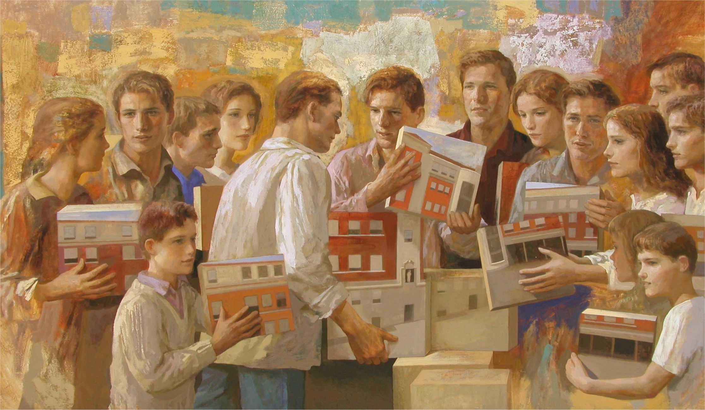

Religious Vocation
Called to Serve — Called to Give
Explore Your Path
Discerning Your Vocation
What is Religious Vocation?
Religious vocation is a call from God to dedicate one's life to serving Him and His people. In the Marist tradition, this means following the example of Jesus Christ and St. Marcellin Champagnat, working with young people and communities to bring about God's kingdom.
If you feel drawn to a life of prayer, service, and community, you may be experiencing a call to religious life as a Marist Brother.

Formation Process
The Marist Journey
Discernment
Initial reflection and prayer to understand God's call in your life.
Initial Formation
One to Two years of continued study, prayer, and apostolic experience.
Novitiate
One to Two years of intensive spiritual and community formation.
Scholasticate
One to Three years of academic, scholastic and community formation.
Temporary Vows
One to Three years of training, missionary and community formation through the Brothers active ministry.
Perpetual Vows
Lifelong and continuous commitment to Marist religious life and to the Marist charism inspired by our Founder, St. Marcellin Champagnat.
Requirements for Applicants
Basic Qualifications
- Minimum age: 18 years old
- Catholic faith commitment
- Good physical and mental health
- Secondary education completed
- Willingness to live community life
What We Look For
- Genuine spiritual openness
- Commitment to service
- Love for young people
- Ability to work in community
- Willingness to grow and learn
Interested in Learning More?
Contact our Vocations Office for more information or to request a consultation with our vocation director.
Personal Stories
Voices of Our Brothers
"Being a Marist Brother has given my life meaning and purpose. Every day, I wake up knowing I'm making a difference in young people's lives."
Br. Michael Tan
15 years in religious life
"The community spirit among Marist Brothers is truly special. We support and encourage each other, and this creates a strong foundation for our service."
Br. David Kim
8 years in religious life